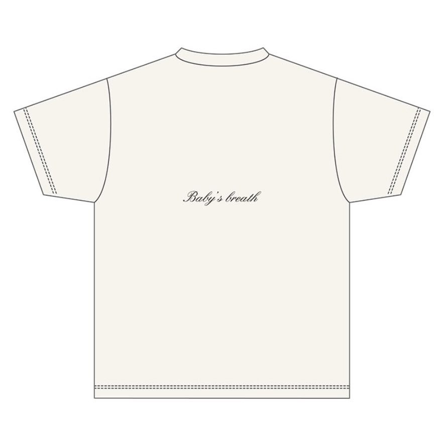

2020/0927Sunあっという間にお誕生日の事を考える季節になったみたい
こんにちは！
伊藤純奈です！
今年の生誕グッズの
予約販売が開始して
おります〜☺︎
11月30日の誕生花は
「かすみ草」ということで
かすみ草を持った写真を
イラストにしてもらったよ〜。
お花が好きだからすごく
お気に入りのデザイン！


後の「Baby's breath」
かすみ草って意味だよ〜
Tシャツの色はアイボリーに
して男女共に私服でも着やすい
感じにしたから届いたらぜひ
コーディネートに取り入れてみてね☺︎
でも届くのめっちゃ寒い時期だから
Tシャツ難しいかな、、、(笑)
ニットカーディガンとか羽織ってみてね(笑)
ちなみにこれの
元になってる写真はこれ！

755の背景にもしてたんだけど
気付いてる人ちょこちょこいたね( ˙꒳˙ )
9月28日23時までの受付です！
ぜひゲットしてね〜！！
それでは！
2020/09/27 14:14
コメント(225)
今日はミーグリありがとうございました！
久しぶりに純奈ちゃんとお話しできて本当に嬉しかったです☺︎
目が合うようにカメラ目線でお話ししてくれたり、嬉しいお話しをしてくれたり、純奈ちゃんの優しさをたくさん感じて、好きが溢れました〜
お花を贈れないのと生誕グッズが待ちきれないのとで、かすみ草などお花を飾っていました きれいって気づいてくれてありがとう☺︎
きれいって気づいてくれてありがとう☺︎
また来週、お話しできるのをたのしみにしています！
今日は久しぶりに会えた嬉しさを伝えるので精一杯だったけど、来週はもっとうまく話せるように頑張ります。映画や舞台のお話をできたらいいな。いつも私の下手な話を一所懸命聞いてくれてありがとう－！
長時間お疲れ様でした。ゆっくり休んでね。
またね〜！
久しぶりに純奈ちゃんとお話しできて本当に嬉しかったです☺︎
目が合うようにカメラ目線でお話ししてくれたり、嬉しいお話しをしてくれたり、純奈ちゃんの優しさをたくさん感じて、好きが溢れました〜
お花を贈れないのと生誕グッズが待ちきれないのとで、かすみ草などお花を飾っていました
また来週、お話しできるのをたのしみにしています！
今日は久しぶりに会えた嬉しさを伝えるので精一杯だったけど、来週はもっとうまく話せるように頑張ります。映画や舞台のお話をできたらいいな。いつも私の下手な話を一所懸命聞いてくれてありがとう－！
長時間お疲れ様でした。ゆっくり休んでね。
またね〜！
じゅんなちゃん
ミーグリ始まったね
楽しそうで良かった
絶対行くから 待っててね
トップ目とれるカナ 観ましたよ
じゅんなちゃんの きょとん顔
かわいい 麻雀難しいよね
早くじゅんなちゃんと
お話ししたいなぁ
またコメントしますね
ミーグリ始まったね
楽しそうで良かった
絶対行くから 待っててね
トップ目とれるカナ 観ましたよ
じゅんなちゃんの きょとん顔
かわいい 麻雀難しいよね
早くじゅんなちゃんと
お話ししたいなぁ
またコメントしますね
純奈ちゃん〜！
今日はミーグリありがとう☺︎
久しぶりにお話できてほんとに嬉しかったし楽しかったよ〜〜！♡
めちゃくちゃ緊張して上手く話せなかったのがちょっと心残り( ;ᴗ; )
来週もお話できるから楽しみにしてるね♡
純奈ちゃんのお部屋の感じ教えてくれてありがとう〜☺︎
私のお部屋タンスとベッドしかないから可愛くできるようにがんばる！（笑）
今日はほんとにありがとう〜！純奈ちゃんだいすき！❤︎
今日はミーグリありがとう☺︎
久しぶりにお話できてほんとに嬉しかったし楽しかったよ〜〜！♡
めちゃくちゃ緊張して上手く話せなかったのがちょっと心残り( ;ᴗ; )
来週もお話できるから楽しみにしてるね♡
純奈ちゃんのお部屋の感じ教えてくれてありがとう〜☺︎
私のお部屋タンスとベッドしかないから可愛くできるようにがんばる！（笑）
今日はほんとにありがとう〜！純奈ちゃんだいすき！❤︎
オンライントークお疲れ様。
緊張でうまく話せなかったけど楽しかったです。
純奈さんも変わらず綺麗でした。
また機会が合えば参加します。
ゆっくり休んで下さい。
緊張でうまく話せなかったけど楽しかったです。
純奈さんも変わらず綺麗でした。
また機会が合えば参加します。
ゆっくり休んで下さい。
純奈ちゃんこんにちは！
今日はミーグリお疲れ様でした！
とても緊張したけど、純奈ちゃんとお話できて嬉しかったよ〜
本当に緊張して終わった後もドキドキがとまらなかった笑
全然話せた記憶がないけど、純奈ちゃんが好きだな〜と思ったよ純奈ちゃんめっちゃ可愛かった！！
やっぱり実際に会ってお話したいなと思ったけど、ミーグリにしか出来ないこともあると思うので、今度のミーグリもよろしくね^_^
ゆっくり休んでね！
今日はミーグリお疲れ様でした！
とても緊張したけど、純奈ちゃんとお話できて嬉しかったよ〜
本当に緊張して終わった後もドキドキがとまらなかった笑
全然話せた記憶がないけど、純奈ちゃんが好きだな〜と思ったよ純奈ちゃんめっちゃ可愛かった！！
やっぱり実際に会ってお話したいなと思ったけど、ミーグリにしか出来ないこともあると思うので、今度のミーグリもよろしくね^_^
ゆっくり休んでね！
じゅんなちゃん おはよう
モバメありがと〜
じゅんなちゃんが
お花屋さんめぐりしてるって
以前言ってたから
お花屋さんの前を通ると
じゅんなちゃんを思い出します
またコメントしますね
モバメありがと〜
じゅんなちゃんが
お花屋さんめぐりしてるって
以前言ってたから
お花屋さんの前を通ると
じゅんなちゃんを思い出します
またコメントしますね
純奈ちゃんやっほ〜！
一昨日はミーグリありがとうございました〜！
ひっさしぶりの純奈さんで緊張すごかった、、！
けど、めためた可愛くて、、（ ; ; ）
話せたことがめためた嬉しかったよ〜！！
ひさびさ！って言われたの、、、え！！！？！
って心の中では思ってたけど反応は出来なかった（笑）
嬉しかったです。。
1回しか行けなかったけど、
また11月の最後のミーグリ、行きます＾＾
楽しみにしてる〜！！
あと、755で教えてくれた荒川アンダーザブリッジ
見始めたの〜！あれ面白いね（＾Ｏ＾）
コメディたっぷりで私も好きだった〜！
純奈ちゃんアニメあんまり観ないって
言ってたけど、面白いアニメ私が教えます、へへ（笑）
私のネトフリのおすすめアニメは
great pretender(グレートプリテンダー)ってアニメ！
詐欺師のアニメなんだけど本当に面白いから見てほしい＾＾
ちな、進撃の巨人もめためたに面白いよっ
さっき、純奈ちゃんに出会う前のブログ
全部見終わりました！！
3年半前くらい〜初ブログまで！全部読んだ！
やっぱり純奈ちゃんは元から大人だし
見た目も中身も変わってるところもあれば
変わってないところもあって
大好きがマシマシになりました（＾_＾）
これからもずーーーーっと応援してます！！
だいすきです＾＾
来月でじゅんちゃん22歳！
お祝いするのは4回目！！
大好きな純奈ちゃんが
これからも健康でいられますように、、！
私も最後の学生生活とバイトがんばる！
来年から始まるお仕事もがんばる！
純奈ちゃんは私の頑張れる糧です！！
2個上には本当に見えないけど
いつか純奈ちゃんみたいな
綺麗なお姉さんになりたいです、、！
なります、！！（笑）
長くなってごめんね。
何が言いたかったのかというと
純奈ちゃんとお話し楽しかったってことと
純奈ちゃんを改めて好きになったってことです。
オンライン授業終わったから
姉のネイルサロンに
フットネイルしてもらいに行ってくる(￣^￣)ゞ
秋っぽくしたいからグリーンネイルかなあ。
あ、ハンドのシンプルネイルは
純奈ちゃん一推しのベージュにしたよっ
またコメントします◎
カチューシャか"わ"い"い"！！！
日々のモバメまじ感謝です☺︎︎︎︎
日々のモバメまじ感謝です☺︎︎︎︎
モバメありがとうー！
黒髪にカチューシャ、ちょっと幼く見えるね♡かわいいっ！！
仕事で疲れてたけど元気でたよー！ありがとう！！
黒髪にカチューシャ、ちょっと幼く見えるね♡かわいいっ！！
仕事で疲れてたけど元気でたよー！ありがとう！！
オンラインミート＆グリートお疲れ様。
初めての個握でしかもオンラインだったんだけど
純奈ちゃんの落ち着いてて優しい雰囲気に緊張がぼくれたよ。
ありがとう。
沢山お話できて楽しかったし背景のグッズにも気付いてくれたのも嬉しかった♪
あと可愛すぎました。
いつの日か握手できる日願ってます。また遊びにいく～
それと白石タクシー楽しみにしてます٩(ˊᗜˋ*)و♪
初めての個握でしかもオンラインだったんだけど
純奈ちゃんの落ち着いてて優しい雰囲気に緊張がぼくれたよ。
ありがとう。
沢山お話できて楽しかったし背景のグッズにも気付いてくれたのも嬉しかった♪
あと可愛すぎました。
いつの日か握手できる日願ってます。また遊びにいく～
それと白石タクシー楽しみにしてます٩(ˊᗜˋ*)و♪
純奈ちゃんのカチューシャのやつめっちゃめちゃ可愛かったので連絡しにきました。スタジオとかなんかの収録とかでも是非やってほしいです。ほんとに可愛かったし、純奈ちゃん推し界隈も沸いてました＾＾
純奈、こんにちは。。。。。
早くも、10月半ば 時の経つのは、まさに早い、、、
今日は、風が強くて、冬の寒さですね、、、
☆モバメ 毎日 ありがとう、、、
カチューシャのお写真も、かわいいなぁ、、、
いつも照れなのか、まっすぐのキリリ写真もほしい。
☆『オンラインミート＆グリート』変換しました、、、
純奈チケット 39枚、、、
日付の選択も間違えて、純奈の設定日で
10枚 × 10月17日 土曜日 1部 ♥ 明日です !!!
10枚 × 11月 1日 日曜日 2部
に変換しました !!
なんと、19枚残っていますので、次回にも期待
実は、10日、11日に、かなりんとやりました、、、
初めてのことで、
なかなか、すんなりとは行きませんでしたが、
少しコツはつかめた気がします。
去年の11月以来、約11ヶ月ぶりに、
『純奈に会える』、、、美しくないおじさんでごめんね。
注文済みの、生誕セットは届いていないので、
いろいろな写真やパネル、ブランケット等々準備中です。
☆ハロウィンの写真やポスター 買いました !!!
12月到着だから、ミーグリには間に合わないかな ?
新型コロナウイルス旋風 第２波の中、、、
一気に秋が加速し、涼しく →寒く なりました、、、
くれぐれも身体を大切にしてくださいね。。。。。
早くも、10月半ば 時の経つのは、まさに早い、、、
今日は、風が強くて、冬の寒さですね、、、
☆モバメ 毎日 ありがとう、、、
カチューシャのお写真も、かわいいなぁ、、、
いつも照れなのか、まっすぐのキリリ写真もほしい。
☆『オンラインミート＆グリート』変換しました、、、
純奈チケット 39枚、、、
日付の選択も間違えて、純奈の設定日で
10枚 × 10月17日 土曜日 1部 ♥ 明日です !!!
10枚 × 11月 1日 日曜日 2部
に変換しました !!
なんと、19枚残っていますので、次回にも期待
実は、10日、11日に、かなりんとやりました、、、
初めてのことで、
なかなか、すんなりとは行きませんでしたが、
少しコツはつかめた気がします。
去年の11月以来、約11ヶ月ぶりに、
『純奈に会える』、、、美しくないおじさんでごめんね。
注文済みの、生誕セットは届いていないので、
いろいろな写真やパネル、ブランケット等々準備中です。
☆ハロウィンの写真やポスター 買いました !!!
12月到着だから、ミーグリには間に合わないかな ?
新型コロナウイルス旋風 第２波の中、、、
一気に秋が加速し、涼しく →寒く なりました、、、
くれぐれも身体を大切にしてくださいね。。。。。
じゅんなちゃん
モバメありがとうねぇ
名前呼びの おはよ〜
大好きだよー
ハロウィンの写真欲しいなぁ
最近は じゅんなちゃんに
見つめられたくて
ポスターを買おうかと悩んでます
明日はミーグリかぁ
いいなぁ〜 楽しんでね
またコメントしますね
モバメありがとうねぇ
名前呼びの おはよ〜
大好きだよー
ハロウィンの写真欲しいなぁ
最近は じゅんなちゃんに
見つめられたくて
ポスターを買おうかと悩んでます
明日はミーグリかぁ
いいなぁ〜 楽しんでね
またコメントしますね
純奈ちゃん今日のミーグリ2部と3部行くの〜！！楽しみ！！
純奈さんは、とても綺麗なので、とてもいい女優さんになれると思います。舞台、観に行きたいです。
純奈ちゃんこんにちは〜！
今日もミーグリお疲れ様でした！
純奈ちゃんに会えるのやっぱりとっても嬉しい！終わった後、ドキドキしつつ幸せな気持ちになるよ！笑
カチューシャとても似合ってて可愛かったです^_^
寒くなってきてるから体調に気をつけてね〜！
次11月なんだけどとっても楽しみにしてます！11月は純奈ちゃんのお誕生日だね〜＼(^o^)／
今日もミーグリお疲れ様でした！
純奈ちゃんに会えるのやっぱりとっても嬉しい！終わった後、ドキドキしつつ幸せな気持ちになるよ！笑
カチューシャとても似合ってて可愛かったです^_^
寒くなってきてるから体調に気をつけてね〜！
次11月なんだけどとっても楽しみにしてます！11月は純奈ちゃんのお誕生日だね〜＼(^o^)／
純奈ー、こんばんは。＾＾
今日は雨降りで寒かったから、公式ショップで買った「JUNNA」ネーム入りの乃木坂ジャージ着て一日中家の中で過ごしてましたよ。
自分は以前から握手会は一度も行ったことないし、だからミーグリにも参加せずー。すまん。(^_^;)
純奈に会える（話はできないけど）のはライブか舞台だけだから、早くそれらがまた普通にできるようになることを祈ってますよ。
純奈は寒いのは好きみたいだけど、風邪などひかぬように健康に気を付けて。（そんなん言われなくてもずっと気を付けてると思うけど）
そうそう、生誕Tシャツは注文しましたよ。＾＾
それじゃまたね。(^_^)/
P.S.
白石タクシーでどんな話をしたのかな。放送をとても楽しみにしています。＾＾
今日は雨降りで寒かったから、公式ショップで買った「JUNNA」ネーム入りの乃木坂ジャージ着て一日中家の中で過ごしてましたよ。
自分は以前から握手会は一度も行ったことないし、だからミーグリにも参加せずー。すまん。(^_^;)
純奈に会える（話はできないけど）のはライブか舞台だけだから、早くそれらがまた普通にできるようになることを祈ってますよ。
純奈は寒いのは好きみたいだけど、風邪などひかぬように健康に気を付けて。（そんなん言われなくてもずっと気を付けてると思うけど）
そうそう、生誕Tシャツは注文しましたよ。＾＾
それじゃまたね。(^_^)/
P.S.
白石タクシーでどんな話をしたのかな。放送をとても楽しみにしています。＾＾
おはよ
もうすぐハロウィンですね
ハロウィンって何を祝う祭り何ですか？
(´･ω･｀)知らんがなが
純奈ちゃんにして貰いたいコスプレは
ペストドクターですね
多分、乃木坂ではまだ誰もやってないと
思うし、今後もやることはないと思います
さてさて、これから年末にかけて
音楽番組が増えるので
乃木坂を観る機会が増えて嬉しいです♪
まいやんの卒業コンサートも
入手困難なオリジナル特典付きの
プラチナ視聴チケットを入手いたしました
ふふふ、、、みんなに自慢しよう
でも、どんなコンサートになるんですかね？
観客もいないし、
メンバーが淡々と曲を披露する感じ？
せっかく、まいやんの最後の晴れ舞台だから
みんなで盛り上がりたいなぁ。。。
もうすぐハロウィンですね
ハロウィンって何を祝う祭り何ですか？
(´･ω･｀)知らんがなが
純奈ちゃんにして貰いたいコスプレは
ペストドクターですね
多分、乃木坂ではまだ誰もやってないと
思うし、今後もやることはないと思います
さてさて、これから年末にかけて
音楽番組が増えるので
乃木坂を観る機会が増えて嬉しいです♪
まいやんの卒業コンサートも
入手困難なオリジナル特典付きの
プラチナ視聴チケットを入手いたしました
ふふふ、、、みんなに自慢しよう
でも、どんなコンサートになるんですかね？
観客もいないし、
メンバーが淡々と曲を披露する感じ？
せっかく、まいやんの最後の晴れ舞台だから
みんなで盛り上がりたいなぁ。。。
今回の個握色々とあって誰のも取ってないからミーグリ行けないのがすごい残念です。。。追加販売されたら即買うのに
じゅんなちゃん
おはよー
去年の今日は全握だったね
はじめて じゅんなちゃんにお花贈ったの
握手しようと入って行ったら
目を大きく見開いて 私の名札みるなり
「あっ！お花、ありがと〜」って
すごく喜んでくれた
気がついてくれて
じゅんなちゃんから声かけてくれて
嬉しかったの覚えてる
モバメで お花好きって言ってたから
これからも お花贈りますね
おはよー
去年の今日は全握だったね
はじめて じゅんなちゃんにお花贈ったの
握手しようと入って行ったら
目を大きく見開いて 私の名札みるなり
「あっ！お花、ありがと〜」って
すごく喜んでくれた
気がついてくれて
じゅんなちゃんから声かけてくれて
嬉しかったの覚えてる
モバメで お花好きって言ってたから
これからも お花贈りますね
こんなことお願いしていいのか分かんないけど
モバメの写真もーちょっと増やして欲しいかも…？
モバメの写真もーちょっと増やして欲しいかも…？
アップトゥボーイみたよ〜！！！！！！！
すごく可愛くて、きれいで、親しみやすさもあって、どのお洋服も髪型もメイクも似合ってて…最っ高でした！！！！！！！
大切にするね♡
すごく可愛くて、きれいで、親しみやすさもあって、どのお洋服も髪型もメイクも似合ってて…最っ高でした！！！！！！！
大切にするね♡
じゅんなちゃん
アップトゥボーイ買ったよー
なんだか高校生に戻ったかと
思うような 幼い表情にも見える
かわいい〜
ミーグリで感想伝えられたらいいな
アップトゥボーイ買ったよー
なんだか高校生に戻ったかと
思うような 幼い表情にも見える
かわいい〜
ミーグリで感想伝えられたらいいな
アップトゥボーイ明日買います！
感想言うんで待っててください
感想言うんで待っててください


金木犀の香りが秋の深まりを感じる今日この頃、、、いかがお過ごしでしょうか？
そうそうシャンプーやらボディソープやらが切れてしまいまして、次何買おうかな？と悩んでいます
オススメのものがあれば、是非教えてくださいね
やっぱ、これから乾燥していくから保湿？成分がたっぷりあるやつがいいな
憧れの純奈ちゃんの持ち物に、めちゃめちゃ興味があります
...そろそろ、抜き打ちの私服ファッションチェックや、カバンの中身チェック、乃木中でしてくれないかな〜♪